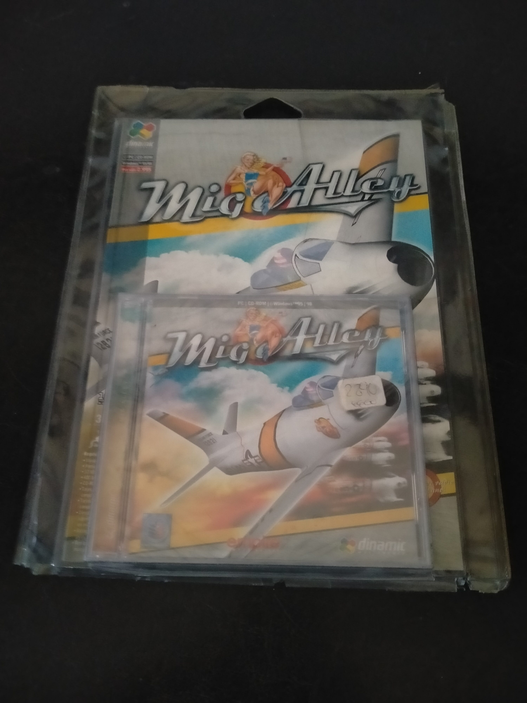

Ficha #000000
MiG Alley
MiG Alley es un simulador de combate aéreo desarrollado por Rowan Software y publicado originalmente por Empire Interactive en 1999. Ambientado en la Guerra de Corea, se centra en los primeros grandes enfrentamientos entre reactores, especialmente los combates entre el F-86 Sabre y el MiG-15 en la zona conocida históricamente como MiG Alley. Su relevancia dentro del género reside en su enfoque de simulación histórica, su campaña dinámica y su intento de representar con detalle el combate aéreo de la primera era del jet. Esta edición española distribuida por Dinamic Multimedia para Windows 95/98 en formato Jewel Case documenta la llegada al mercado nacional de uno de los simuladores militares de PC más especializados de finales de los noventa, en una etapa en la que el CD-ROM, la aceleración 3D y las ediciones compactas sustituyeron progresivamente a la caja grande tradicional.
- Formato
- Jewel Case
- Plataforma
- Win95 Win98
- Género
- Simulación de vuelo Simulación de combate Combate aéreo
- Serie
- Todos Jewel Case Dinamic multimedia
- Desarrollador
- Rowan Software
- Distribuidor
- Empire Interactive, Dinamic Multimedia
- EAN
- —
Contenido de la edición
- CD-ROM
- caja Jewel Case
- carátula
- funda plástica exterior
Preservación
- Protección
- Verificación de CD
- Formato recomendado
- BIN/CUE
- Jugable en virtualización
- Sí
Preservación recomendada mediante imagen completa del CD-ROM en formato BIN/CUE, conservando la estructura original del disco y permitiendo documentar la comprobación de soporte físico durante instalación o ejecución. Para uso archivístico conviene conservar además una copia verificada del contenido del disco y probar la ejecución montando la imagen en un entorno Windows 95/98 virtualizado.